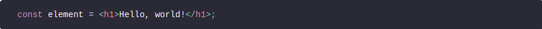
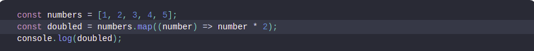

React is a JavaScript library for building user interfaces. Learn what React is all about on our
homepage or in the tutorial.
Try React
React has been designed from the start for gradual adoption, and you can use as little or as much
React
as you need. Whether you want to get a taste of React, add some interactivity to a simple HTML page,
or
start a complex React-powered app, the links in this section will help you get started.
The smallest React example looks like this:
It displays a heading saying “Hello, world!” on the page.
-
Click the link above to open an online editor. Feel free to make some changes, and see how they
affect the output. Most pages in this guide will have editable examples like this one.
How to Read This Guide
In this guide, we will examine the building blocks of React apps: elements and components. Once you
master them, you can create complex apps from small reusable pieces.
Tip
This guide is designed for people who prefer learning concepts step by step. If you prefer
to
learn by doing, check out our practical tutorial. You might find this guide and the tutorial
complementary to each other.
-
This is the first chapter in a step-by-step guide about main React concepts. You can find a list
of all its chapters in the navigation sidebar. If you’re reading this from a mobile device, you
can access the navigation by pressing the button in the bottom right corner of your screen.
-
Every chapter in this guide builds on the knowledge introduced in earlier chapters. You can
learn most of React by reading the “Main Concepts” guide chapters in the order they appear
in
the sidebar. For example, “Introducing JSX” is the next chapter after this one.
Let’s Get Started!
Keep scrolling down, and you’ll find the link to the next chapter of this guide right before the
website footer.
Consider this variable declaration:

-
This funny tag syntax is neither a string nor HTML.
- It is called JSX, and it is a syntax extension to JavaScript. We recommend using it with React
to describe what the UI should look like. JSX may remind you of a template language, but it
comes with the full power of JavaScript.
-
JSX produces React “elements”. We will explore rendering them to the DOM in the next section.
Below, you can find the basics of JSX necessary to get you started.
Elements are the smallest building blocks of React apps.
An element describes what you want to see on the screen:
Unlike browser DOM elements, React elements are plain objects, and are cheap to create. React DOM
takes care of updating the DOM to match the React elements.
Note:
One might confuse elements with a more widely known concept of “components”. We will
introduce
components in the next section. Elements are what components are “made of”, and we encourage you
to read this section before jumping ahead.
Components let you split the UI into independent, reusable pieces, and think about each piece in
isolation. This page provides an introduction to the idea of components. You can find a detailed
component API reference here.
Conceptually, components are like JavaScript functions. They accept arbitrary inputs (called
“props”) and return React elements describing what should appear on the screen.
Function and Class Components
The simplest way to define a component is to write a JavaScript function:
This function is a valid React component because it accepts a single “props” (which stands for
properties) object argument with data and returns a React element. We call such components “function
components” because they are literally JavaScript functions.
This page introduces the concept of state and lifecycle in a React component. You can find a detailed
component API reference here.
Consider the ticking clock example from one of the previous sections. In Rendering Elements, we have
only learned one way to update the UI. We call ReactDOM.render() to change the rendered output:
In this section, we will learn how to make the Clock component truly reusable and encapsulated. It will
set up its own timer and update itself every second.
In React, you can create distinct components that encapsulate behavior you need. Then, you can
render only some of them, depending on the state of your application.
Conditional rendering in React works the same way conditions work in JavaScript. Use JavaScript
operators like if or the conditional operator to create elements representing the current state, and
let React update the UI to match them.
Consider these two components:
First, let’s review how you transform lists in JavaScript.
Given the code below, we use the map() function to take an array of numbers and double their values.
We assign the new array returned by map() to the variable doubled and log it:

Often, several components need to reflect the same changing data. We recommend lifting the shared
state up to their closest common ancestor. Let’s see how this works in action.
In this section, we will create a temperature calculator that calculates whether the water would boil
at a given temperature.
We will start with a component called BoilingVerdict. It accepts the celsius temperature as a prop,
and prints whether it is enough to boil the water:
Composition vs Inheritance
React has a powerful composition model, and we recommend using composition instead of inheritance to
reuse code between components.
In this section, we will consider a few problems where developers new to React often reach for
inheritance, and show how we can solve them with composition.
Some components don’t know their children ahead of time. This is especially common for components
like Sidebar or Dialog that represent generic “boxes”.
We recommend that such components use the special children prop to pass children elements
directly into their output:
React is, in our opinion, the premier way to build big, fast Web apps with JavaScript. It has scaled
very well for us at Facebook and Instagram.
One of the many great parts of React is how it makes you think about apps as you build them. In this
document, we’ll walk you through the thought process of building a searchable product data table
using React.